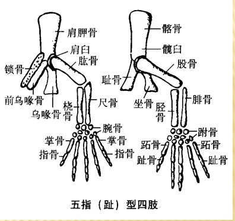

从水生到陆生的转变
两栖纲是由 水生向陆生转变的过渡动物，是一类在个体发育过程中经历 幼体水生 → 成体水陆兼栖 生活的变温动物。但也有少数种类终生水生，那是登陆后重新返回水域的 次生性现象。
由于水陆两地条件差异巨大，登陆动物必须进化出相应的适应结构。脊椎动物由水生到陆生的转变是 脊椎动物演化史上最重大的跃迁，两栖纲正是这一跃迁的过渡代表。
一、水陆环境的五大差异与登陆挑战
登陆动物面临的核心问题可归纳为五个方面，每一方面都要求器官系统发生深刻改造：
- 水环境与干燥陆地：陆生动物面临的首要问题是 保持体内水分。需进化保水结构（皮肤角质化等）。
- 氧气密度的改变：水中含氧量仅 3~9 mL/L，空气中含氧量高达 210 mL/L。呼吸器官的结构要彻底改变（鳃→肺）。
- 浮力的改变：水的密度比空气大上千倍，水中动物受接近体重的浮力便于运动；陆地动物失去浮力，四肢须进化成能承担支持身体和运动 的结构。
- 温差变化不同：水环境温差小（一般不超过 25~30℃）；陆地昼夜、四季温差大。陆生动物在 行为和生理 上都必须作出适应（如冬眠/夏蛰）。
- 声波、光波介质不同，地形复杂多样：要求陆生动物具有更发达的 运动系统、神经系统和感觉器官。
| 水陆差异 | 水中 | 陆地 | 所需的适应性改造 |
|---|---|---|---|
| 水分 | 充沛，无需保水 | 干燥，易失水 | 皮肤角质化、减少水分散失 |
| 含氧量 | 3~9 mL/L（低） | 210 mL/L（高约30~70倍） | 鳃→肺（+皮肤呼吸） |
| 密度/浮力 | 密度大，浮力≈体重 | 空气密度小，几乎无浮力 | 鳍→五趾型四肢，承重运动 |
| 温差 | 小（<25~30℃） | 大（昼夜/四季） | 变温+冬眠/夏蛰行为适应 |
| 声光介质/地形 | 单一，传导好 | 复杂多样 | 发达的神经系统和感觉器官 |
总之，水陆环境的巨大差异使登陆动物在 呼吸系统、支持和运动系统、神经系统、感觉器官及相应的其他系统 必须得到深刻改造。
两栖动物虽能适应多种生活环境，但其适应力远不如更高等的陆生脊椎动物：既不能适应海洋环境，也不能生活在极端干旱环境，在寒冷和酷热季节则需 冬眠或夏蛰。这反映其登陆的"初步性"和"不完善性"。
二、关键转变一：呼吸器官（鳃 → 肺 + 皮肤）
水中鳃呼吸在空气中会因鳃丝干燥塌陷而失效，登陆必须以 肺 为主要呼吸器官。两栖类出现 一对囊状肺（壁薄、内壁蜂窝状），但肺结构仍简单、面积不大，气体交换效率有限，故需 皮肤呼吸和口咽腔呼吸辅助。
- 幼体（蝌蚪）：用鳃呼吸（水生）；
- 成体：肺呼吸（咽式呼吸/正压呼吸）+ 皮肤呼吸 + 口咽腔黏膜呼吸；
- 有尾水生种类：终生鳃呼吸和皮肤呼吸。
三、关键转变二：运动器官（鳍 → 五趾型四肢）
登陆后失去水的浮力，身体重量需由四肢承担并完成陆上运动。两栖类从肉鳍鱼的 肉质偶鳍 演化出 典型的五趾型四肢，这是登陆的关键。
一个典型脊椎动物的前（后）肢包括五部分：
- 前肢：上臂（肱骨）→ 前臂（桡骨+尺骨）→ 腕（腕骨）→ 掌（掌骨）→ 指（指骨）
- 后肢：股（股骨）→ 胫（胫骨+腓骨）→ 跗（跗骨）→ 跖（跖骨）→ 趾（趾骨）
五趾型四肢能承受体重并使身体在地面运动。但两栖类四肢位于 躯干侧面，不能抬高身体，运动速度有限（爬行姿态）。

四、关键转变三：皮肤角质化与保水
为应对陆地干燥，两栖类皮肤开始出现 轻微角质化，但程度很低（仅 1~2 层轻微角质化、有核的活细胞），只能在 一定程度上 防止水分散失，故两栖类只能生活在潮湿环境中。蟾蜍例外，其表皮角质化程度较高，比较耐旱。
皮肤特点：
- 表皮分 角质层和生发层 2 层；
- 真皮较厚而致密，富 黏液腺（保持湿润，助皮肤呼吸）和 毒腺（蟾蜍大毒腺即耳后腺）；
- 色素细胞（黑色素细胞、红色素细胞、黄色素细胞）成层分布，色素颗粒集中/分散使体色变深/变浅，受光、温及内分泌影响；
- 真皮与肌肉间分布大量毛细血管及 淋巴间隙，便于皮肤呼吸；
- 鳞已退化（仅少数无足目残留鳞片）。
五、关键转变四：感觉器官与脊柱分化
登陆后感觉器官也发生改造以适应空气介质：
- 听觉：出现 中耳和鼓膜（空气传导声波），这是水生鱼类所没有的；
- 视觉：出现 眼睑和瞬膜（保护眼球防止干燥），晶状体调节以适应空中视物；
- 嗅觉：出现 内鼻孔，鼻腔成为呼吸兼嗅觉通道（四足动物适应陆地的重要特征）。
脊柱首次出现 颈椎和荐椎，分为 颈椎（1块）、躯干椎、荐椎（1块）、尾椎 四区（尾椎愈合成尾杆骨）。颈椎（寰椎）使头部可灵活转动；荐椎通过腰带把体重传给后肢。这是陆生动物的重要特征。
水生到陆生转变核心记忆点
- 两栖纲=水生向陆生转变的过渡类群，幼体水生→成体水陆兼栖，变温。
- 五大水陆差异：水分(保水)、氧(鳃→肺)、浮力(鳍→四肢)、温差(冬眠)、声光介质(神经感官发达)。
- 呼吸转变：鳃→肺+皮肤+口咽腔呼吸；皮肤呼吸占冬眠需氧2/5。
- 运动转变：肉质偶鳍→五趾型四肢（前肢肱桡尺腕掌指/后肢股胫腓跗跖趾）。
- 皮肤：轻微角质化+黏液腺+毒腺+色素细胞+能呼吸；蟾蜍较耐旱。
- 脊柱首次分化四区：颈椎+躯干椎+荐椎+尾椎（比鱼多颈椎、荐椎）。
- 新感觉器官：中耳+鼓膜、眼睑+瞬膜、内鼻孔。
- 两栖类适应力有限：不能入海、不能极端干旱，需冬眠/夏蛰——登陆"初步性"。